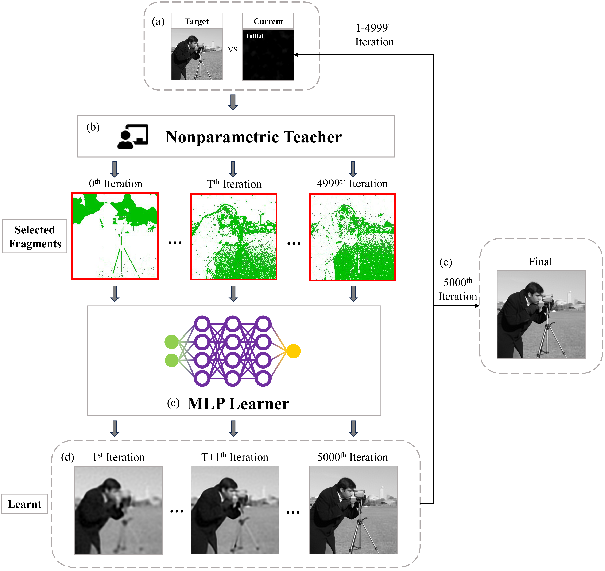
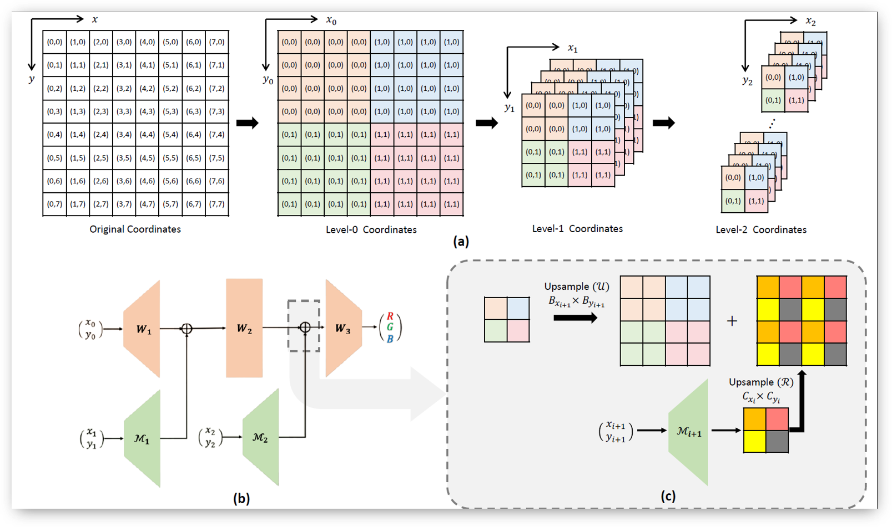

|
Steven Luo (aka STS Luo) I'm a 4th year UofT CS undergrad. Since my first endeavour into AI in 2018, I've been advised by some wonderful people -- David Lindell at UofT DGP; HKU EEE's Ngai Wong; Matthias Niemeier at UTSC CoNSens |

|
ResearchMy interests stem from the root vision of replicating human intelligence both as:
An end - to understand what makes human intelligence so unique, if unique at all.
I believe the three most important, but non-exhaustive, components currently are: linguistic intelligence, perceptual intelligence, and physical intelligence. Currently, I'm interested in language models and its implications for RL (work in progress). Previously, I worked on topics in computer vision and neural fields. |
|
 |
Nonparametric Teaching of Implicit Neural Representations
Zhang, Chen* STS Luo*, Jason Chun Lok Li*, Yik Chung Wu, Ngai Wong ICML, 2024 project page / code / arXiv (abstract tbd) |
|
 |
ASMR: Activation-Sharing Multi-Resolution Coordinate Networks for Efficient Inference
STS Luo*, Jason Chun Lok Li*, Le Xu, Ngai Wong ICLR, 2024 code / arXiv (abstract tbd) |

|
Task-Agnostic Approach to Modeling the Ventral and Dorsal Stream
STS Luo*, Tahsin Rehza*, Matthias Niemeier MAIN, 2023 poster (abstract tbd) |
|
Website design credits to Jon Barron |